Run command "nano /etc/aor/sources.list" kemudian tambahkan repository Indonesia pada baris paling bawah
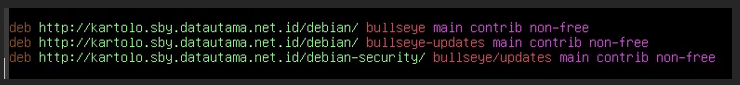run command “nano /etc/network/interfaces” untuk mengkonfigurasi ip dari Debian, beri tanda # didepan iface enp0s3 inet dhcp dan tambahkan:
auto enp0s3
iface inet esp0s3 dhcp
address 192.168.1.13
Note, untuk ip address bisa menyesuaikan
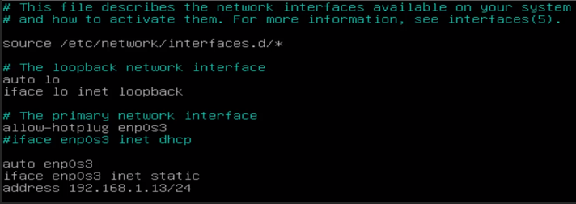Buka machine -> setting -> network dan rubah Attached to menjadi host only adapter
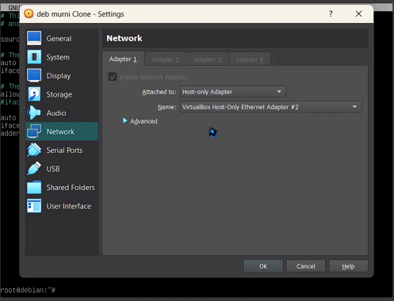Buka control panel pada windows -> network and internet -> network and sharing center -> change adapter settings dan cari virtualbox host-only
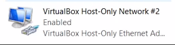Kemudian klik kanan -> properties -> ipv4, rubah ip address berbeda dengan ip debian tetapi tetap satu network dan preferred DNS server menyesuaikan dengan ip debian
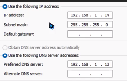Run command “nano /etc/ssh/sshd_config”
hapus tanda # yang ada di depan port dan ganti port sesuai keinginan, sebagai contoh disini menggunakan port 13
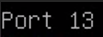hapus tanda # yang ada di depan PermitRootLogin dan hapus prohibit-password kemudian ganti dengan yes
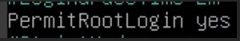Run command “systemctl restart ssh”
run command “nano /etc/bind/named.conf.default-zones”
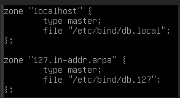cut pada bagian diatas, dengan menggunakan ctrl+k sebanyak sembilan kali kemudian ctrl+u sebanyak dua kali
rubah localhost menyesuaikan dengan DNS yang akan dipakai, sebagai contoh saya menggunakan mokletxt1.edu, dan db.local menyesuaikan keinginan, sebagai contoh saya menggunakan db.mokletxt1
ubah 127 menyesuaikan dengan oktet ip debian, karena oktet pertama ip saya adalah 192 maka ubah menjadi 192, dan ubah db.192 sesuaikan dengan oktet pertama ip
Run command "cp /etc/bind/db.local /etc/bind/db.mokletxt1" (untuk dbmokletxt1 menyesuaikan dengan yang telah dikonfigurasi pada file /etc/bind/named.conf.default-zones)
Run command "cp /etc/bind/db.172 /etc/bind/db.192" (untuk dbmokletxt1 menyesuaikan dengan yang telah dikonfigurasi pada file /etc/bind/named.conf.default-zones)
Run command “nano /etc/bind/db.mokletxt1” kemudian ganti kata kata ”localhost” menjadi ”mokletxt1.edu" kemudian rubah ip menjadi 192.168.1.13 dan hapus baris paling bawah
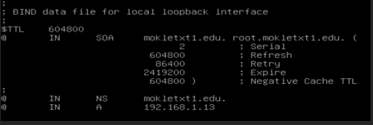Run command “nano /etc/bind/db.192” lalu ganti “localhost” menjadi “moklet.edu” dan rubah ip menjadi ip debian yang dibalik tanpa oktet pertama, karena ip debian saya 192.168.1.13 menjadi 13.1.168
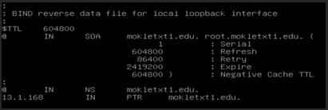Run command “nano /etc/resolv.conf” dan tambahakan “nameserver 192.168.1.13” dibagian teratas
Run command “systemctl restart bind9” dan run command “nslookup mokletxt1.edu”(DNS sesuaikan dengan yang sudah di konfigurasi) jika muncul seperti Digambar maka dns sudah berhasil
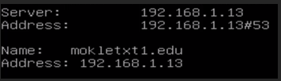